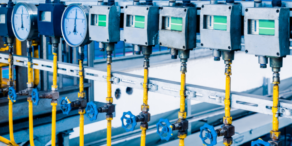

environmental management
환 경 경 영
기업의 고유한 생산활동에 의해서 필연적으로 파생되는 환경적 훼손을 최소화하면서
환경적이고 건전하고 지속 가능한 발전을 도모하는 경영활동을 말합니다.
동화약품은 대한민국 최초 제약 기업으로 핵심 가치인 고객 가치, 인재 존중, 정도 경영을 통해
의약품 제조와 환경과의 조화를 추구하기 위하여 환경 기본방침 및 목표를 수립하여 지속적인 환경보전 활동을 추진할 수 있도록
전 임직원들이 환경보전활동에 참여하고 노력하고 있습니다.
환경방침
1. 환경법규 및 자체 환경관리 기준 준수
2. 환경경영시스템 유지 및 지속적 개선
3. 환경영향평가를 통한 예방과 개선활동 전개
4. 전 사원의 활발한 환경보전활동 참여
환경목표
공정 개선, 환경보전활동을 통한 목표
1. 생산 폐기물 배출량 저감
2. 에너지 절약, 사용감축
3. 환경오염물질 배출 방지
1. GMP 공장 옥상 쿨루프 도입
- 도입배경
・ 여름철 건물 내부 온도상승으로 근로자 피로도 상승
・ 공장 내 열차단 미흡으로 냉방비 증가
・ 건물 실내 온도 감소 방안 마련
기대효과
・ 태양열(적외선) 반사와 높은 차열효과 발휘
・ 여름철 태양열 차단으로 냉방비 에너지 절감효과
- 에너지 절감량 : 48,600 kwh/년
2. GMP 공장 친환경 보일러 도입
- 도입배경
・ 기존 일반보일러 대기오염물질(질소산화물) 다량 배출
・ 대기 지구환경 개선을 위한 방안 마련 필요
기대효과
・ 대기오염물질 질소산화물(NOx) 배출량 절감효과
・ 질소산화물 배출농도 저감 : 50 ppm -> 12ppm 미만
- 질소산화물 연간 발생량 : 4ton/년 저감
3. GMP 공장 고효율 냉동기 전환
- 
- 도입배경
・ 냉동기 노후화로 인한 유지보전 비용 증가
・ 가동시 부하율에 따른 용량 제어 불가
・ 냉동부하 변동에 따른 안정적 냉동기 가동 필요
기대효과
・ 냉동 부하율에 따른 운전으로 에너지 Saving
・ 무급유 인버터 방식(에너지 효율 인증제품) 도입으로
전기사용량 절감효과 x
- 에너지 절감량 : 50,597 kwh/년
4. GMP 공장 세척수 재이용 시스템 도입
- 도입배경
・ 생산량 증가로 인한 상업용수 사용량 증가
・ 공장 내 상업용수 절약 방안 마련 필요
기대효과
・ 세척수 → 살균기 재이용(1차) → 보일러용수 재이용(2차)
- 살균용수 재이용 상업용수 절감량 : 연 평균 10,000ton/년
- 보일러용수 재이용 상업용수 절감량 : 연 평균 9,000ton/년